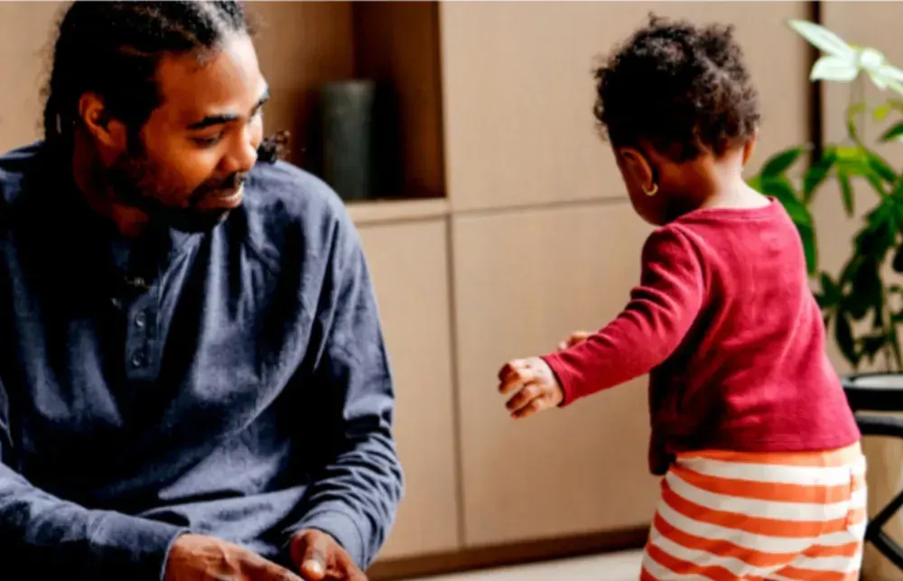

FamilieFamilierecht
Familiezaken raken diep. Ik zorg voor duidelijkheid, zodat jij je kan richten op je kinderen en je toekomst.
- Scheiding en de verdeling achteraf
- Verblijfsregeling en ouderlijk gezag
- Onderhoudsbijdrage en buitengewone kosten
- Samenwonen, gezinswoning, nieuw samengesteld gezin